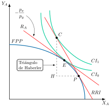
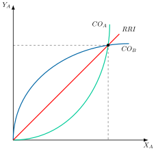
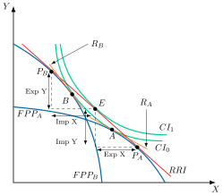
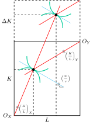
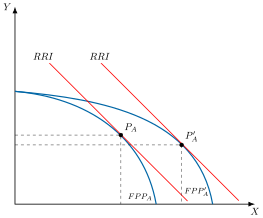
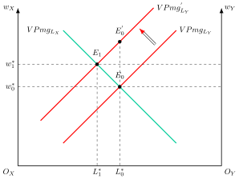
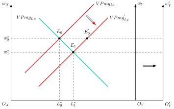
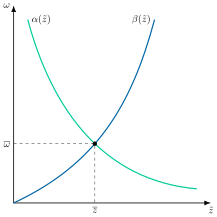

Apuntes para la oposición al Cuerpo de Diplomados Comerciales del Estado
14 Teoría del comercio internacional (I): las teorías de la ventaja absoluta y de la venta comparativa. Determinación de la relación real de intercambio. El modelo de factores específicos. El modelo Heckser-Ohlin-Samuelson (H-O-S); teoremas derivados del modelo y extensiones.
Tema pendiente de revisión. Este tema está publicado pero aún no lo he revisado a fondo: puede contener erratas o partes por pulir.
14.1 Introducción  1'
1'
¿Por qué comercian los países entre sí, y quién gana y quién pierde cuando lo hacen? Son preguntas tan antiguas como la economía y hoy vuelven a ocupar el centro del debate, en medio de un aumento de aranceles y de incertidumbre política. Este contexto de inestabilidad y fragmentación ha puesto de relieve las limitaciones de un sistema comercial basado exclusivamente en la eficiencia de costes.
En este marco, desde hace más de trescientos años, los economistas se han preguntado cuáles son los motivos del comercio internacional, si existen ganancias derivadas y sus impactos sobre las partes que participan en el intercambio. Tres preguntas lo resumen: cuál es el patrón de comercio, a qué se debe la ventaja en la producción y cómo se determina la relación real de intercambio.
Concretamente, durante los siglos XVIII y XIX, frente a los autores mercantilistas, los economistas clásicos defenderán que el comercio internacional no va a ser un juego de suma cero. Posteriormente, en el siglo XX los autores neoclásicos expandirán las teorías del comercio internacional, mejorando el instrumental analítico y superando ciertos supuestos restrictivos de los clásicos.
Por consiguiente, el objetivo de esta exposición será el estudio de la teoría tradicional del comercio internacional a través del siguiente esquema:
Las teorías clásicas, con las aportaciones de Smith, Ricardo y Mill.
Las teorías neoclásicas, donde se estudiará el modelo de Haberler, la determinación de la relación real de intercambio con las curvas de oferta neta, el modelo Heckscher-Ohlin-Samuelson con sus cuatro teoremas y el modelo de factores específicos como versión a corto plazo del anterior.
Las extensiones del modelo y su contrastación empírica, desde la paradoja de Leontief hasta el modelo H-O-V.
14.2 Teorías clásicas 5'
Comenzando con las teorías clásicas, la teoría del comercio internacional tiene sus raíces en el mercantilismo, movimiento imperante desde el siglo XVI hasta la primera mitad del siglo XVIII. El mercantilismo plantea cómo enriquecer y reforzar el poder del Estado, sosteniendo que la riqueza de un país proviene de la cantidad de metales preciosos que posee. Por lo tanto, las recomendaciones de política económica son la existencia de superávits comerciales y la protección comercial, rechazando así el libre comercio sin analizarlo.
Adam Smith con su obra La riqueza de las naciones (Smith 1776) rompe con la visión proteccionista de los mercantilistas, dando pie al nacimiento de la teoría económica y al liberalismo económico. Junto a las teorías de Adam Smith, la teoría del comercio internacional también se basa en las aportaciones de David Ricardo y John Stuart Mill.1
La teoría de la ventaja absoluta de Adam Smith
Adam Smith parte de considerar que, si dos países comercian entre sí de forma voluntaria, debe existir una ganancia mutua para ambos. Así, Smith analiza los efectos del comercio internacional y observa que es beneficioso porque permite incrementar la dimensión del mercado y fomentar la división del trabajo y la especialización productiva, que actúan como principales mecanismos de crecimiento de la renta y la producción y, por lo tanto, del bienestar. De esta forma, el libre comercio y la especialización productiva serían dos de los motores del crecimiento económico.
Según Smith, la especialización productiva, que va a explicar el comercio entre dos países, quedará determinada por el principio de la ventaja absoluta, según el cual un país debe especializarse en la producción de aquel bien que produce a un coste menor que el resto de países e importar los que produce a un coste mayor. Así, los países pueden obtener ganancias especializándose en la producción del bien en el que tienen ventaja absoluta y comerciando entre sí. Esto hará que los recursos se utilicen de forma eficiente y aumente la producción de ambos bienes.
Sin embargo, la ventaja absoluta no explica:
Por qué aparece el comercio internacional cuando un país tiene ventaja absoluta en la producción de todos los bienes. Este problema lo trata de resolver David Ricardo.
Cómo se fijan los precios de intercambio. Esta cuestión la tratará John Stuart Mill.
La teoría de la ventaja comparativa de David Ricardo
En su obra Principios de economía política y tributación (Ricardo 1817), Ricardo explica por qué es posible que exista comercio internacional cuando un país tiene ventaja absoluta en la producción de todos los bienes. Esto se debe a que para Ricardo el comercio se basa en la ventaja comparativa, es decir, en las diferencias relativas de los costes de producción debidas a la tecnología. De esta manera, un país se especializará y exportará aquellos bienes que produce a un menor coste relativo, es decir, a un menor coste en términos de los otros bienes.
Ricardo parte de los siguientes supuestos:
Dos países, dos productos y un factor de producción –trabajo– que es móvil dentro del país pero inmóvil entre países.
Distinta tecnología en cada país, es decir, el factor de producción es homogéneo dentro del país pero heterogéneo entre países.
La tecnología es lineal, con un coeficiente fijo de trabajo por unidad de producto, por lo que la productividad marginal del trabajo es constante, es decir, igual a la productividad media: \(PMg_{L}=PMe_{L}\).
El precio de una mercancía viene determinado por su coste de producción, que a su vez viene determinado por el número de horas incorporadas, es decir, por la inversa de la productividad tal y como indica la teoría del valor trabajo.
Libre comercio, sin restricciones ni coste de transporte.
Supóngase que los dos países son Inglaterra y Portugal, y que se producen paño y vino como se observa en la Tabla 14.1. Portugal tiene ventaja absoluta en los dos bienes, pero que la industria de un país sea tecnológicamente superior a la del resto no es condición necesaria ni suficiente para que sobreviva al comercio.
La ventaja comparativa es un concepto de coste de oportunidad: un país tiene ventaja comparativa en un bien cuando el coste de producirlo en términos del otro bien es menor que en el otro país. Así, el coste relativo de producir paño en Inglaterra es \(4/10=0{,}4\), mientras que en Portugal es \(3/6=0{,}5\), por lo que Inglaterra tiene ventaja comparativa en la producción de paño.
| Costes unitarios (horas de trabajo) | ||
| Inglaterra | Portugal | |
| Paño | 4 | 3 |
| Vino | 10 | 6 |
De este modelo Ricardo concluye que la especialización será completa debido al supuesto de tecnología lineal pues, al ser el coste unitario constante, no aparecen deseconomías de escala cuando la producción es muy alta. Por lo tanto, en la medida en la que cada país se especializa en la producción de aquel bien que produce con un coste relativo menor que el otro, el comercio será beneficioso para ambos sin que haya perdedores, ya que la producción será mayor que en autarquía, exportándose el excedente e importándose el bien que no se produce.
De esta forma, el modelo es la piedra angular de la teoría pura del comercio internacional posterior, ya que toda ella se basa en el concepto de ventaja comparativa.
Sin embargo, presenta una serie de inconvenientes:
Esta teoría no determina la relación de intercambio, es decir, la relación de precios a la que se intercambian las mercancías. Solo establece que, para que el comercio beneficie a ambos países, la relación de intercambio debe quedar comprendida entre los precios relativos de autarquía, pero no en qué punto de ese intervalo se fija. Es necesaria la introducción de la demanda2.
Si un país es demasiado pequeño con respecto al otro, puede que no sea capaz de abastecerle.
Los países se especializan completamente: esto no ocurre en la realidad.
Se basa en un único factor productivo.
La teoría de la demanda recíproca de Stuart Mill
Por otro lado, la principal aportación de John Stuart Mill (Mill 1848) a la teoría del comercio internacional va a permitir resolver la indeterminación del precio relativo internacional, derivada de la teoría de la ventaja comparativa de Ricardo, aunque no dará una respuesta técnicamente sólida.
A través de su análisis de las demandas recíprocas, Mill argumentará que los precios relativos de intercambio vienen determinados por la intensidad de la demanda doméstica de productos extranjeros y la intensidad de demanda extranjera de productos domésticos.
De esta forma, el autor sostiene en su teoría de la demanda recíproca que los precios relativos de intercambio serán aquellos que permitan igualar el valor de la oferta de exportaciones al valor de la demanda de importaciones.
Esta idea se resume en la «ecuación de la demanda internacional»: los productos de un país se intercambian por los de otros a los valores necesarios para que el valor de todas sus exportaciones pague exactamente el de todas sus importaciones.3
¿Qué ocurre si un país es grande y el otro pequeño? Si los países son de tamaño muy distinto, la ley de la demanda recíproca deja de operar en la práctica: prevalece la relación de precios del país grande y el país pequeño puede vender a ese precio todo lo que quiera. Es la “importancia de ser poco importante” (Dwivedi 2013, cap. 5). Con costes constantes, si el país pequeño se especializa por completo y el grande no, el comercio se realiza al precio de autarquía del país grande y el pequeño obtiene todas las ganancias, aunque asume el riesgo de depender de un único producto (Salvatore 2020, 44).
Conclusiones de los autores clásicos
Las respuestas de los autores clásicos a las tres preguntas planteadas en la Introducción son las siguientes:
Patrón de comercio: para Smith, la ventaja absoluta y, para Ricardo, la ventaja comparativa, que es la que determina el patrón cuando un país tiene ventaja absoluta en todos los bienes. La especialización productiva es completa. No hay perdedores y el comercio internacional beneficia a todo el mundo.
Razón de ser de las ventajas en la producción: factores tecnológicos (exógenos).
Relación real de intercambio: intensidad de las demandas recíprocas, según Mill.
Estas respuestas descansan en una tecnología lineal con un único factor, lo que explica la especialización completa y la ausencia de perdedores, y dejan sin explicar el origen de las diferencias tecnológicas. Las teorías neoclásicas relajan estos supuestos.
14.3 Teorías neoclásicas 13'30"
Por su parte, los enfoques neoclásicos de la teoría del comercio internacional suponen un avance notable respecto a las aportaciones de la escuela clásica debido a que:
Mejoran el análisis matemático y gráfico, destacando los desarrollos de Edgeworth y Marshall.
Incorporan la demanda.
Rompen con supuestos restrictivos, ya que:
El trabajo ya no es el único factor de producción, lo que da lugar a ganadores y perdedores del comercio internacional.
La tecnología ya no es lineal, lo que va a dar lugar a una especialización incompleta.
Entre las diferentes aportaciones neoclásicas destacan el modelo de Haberler y el de Heckscher-Ohlin-Samuelson.4
Teoría neoclásica con costes crecientes: el modelo de Haberler
La idea principal del modelo de Haberler (Haberler 1936) es que las diferencias en los precios relativos de los bienes y la consiguiente ventaja comparativa, que da lugar al comercio internacional y al patrón de comercio, se deben tanto a las diferencias en las tecnologías como a las preferencias de los individuos5.
Los supuestos del modelo son los siguientes:
Modelo 2x2x2: 2 países –\(A\) y \(B\)–, 2 productos –\(X\) e \(Y\)–, y 2 factores de producción –capital, \(K\), y trabajo, \(L\)–.
Cada tipo de factor productivo es homogéneo y perfectamente divisible y ambos con cantidades totales dadas.
Los bienes se producen con una función neoclásica de buen comportamiento, es decir, con rendimientos marginales decrecientes de cada factor y rendimientos constantes a escala. Como los dos bienes utilizan el capital y el trabajo en proporciones distintas, la tecnología ya no es lineal.
De esta forma, el coste de oportunidad es creciente: a medida que aumenta la producción de un bien, es necesario renunciar a cantidades crecientes del otro bien. Ello implica normalmente especialización incompleta y, con comercio, que el coste de oportunidad de cada país, es decir, su \(RMT\), se iguale a la relación real de intercambio6.Las preferencias sociales se presentan mediante una función de utilidad continua, diferenciable, monótonamente creciente y cuasicóncava, lo que genera curvas de indiferencia estrictamente convexas.
Competencia perfecta, información perfecta y no hay bienes públicos ni externalidades.
Plena movilidad de bienes entre países pero no de factores productivos los cuales solo son móviles a nivel nacional.
Gráficamente, en un plano de bien \(Y\) y bien \(X\) como el de la Figura 14.1, se representan la frontera de posibilidades de producción (FPP), las curvas de indiferencia social (CI) y la relación real de intercambio (RRI) del país A. Así:
La FPP representa las cantidades máximas de bienes que puede producir un país dada una tecnología y dotación de factores. Las combinaciones más allá de la curva no son factibles y las del interior no son eficientes7.
Las curvas de indiferencia social, \(CI\), representan las combinaciones de los bienes que proporcionan el mismo nivel de utilidad al país, que será mayor cuanto más alejada esté la curva del origen.
El equilibrio se logra en la tangencia entre la FPP y la \(CI\), es decir, donde la Relación Marginal de Transformación, \(RMT\), –pendiente de la FPP– se iguala a la Relación Marginal de Sustitución, \(RMS\), –pendiente de la curva de indiferencia–8. Esto ocurre en el punto \(E\), donde se produce lo que se consume, es decir, en autarquía, y donde la pendiente de la tangente en dicho punto representa la ratio de precios relativos de los bienes a nivel doméstico, \(R_{A}\).
Si el país se abre al comercio internacional, el país A se enfrenta a una relación real de intercambio9, \(RRI\), por ejemplo, mayor, lo que indica que el precio relativo de \(X\) es mayor a nivel internacional que nacional, por lo que el país tenderá a exportar \(X\) y a importar \(Y\).
Así, se puede observar cómo la diferencia de precios relativos que da lugar al comercio internacional y a un patrón determinado se debe a la tecnología –FPP, que determina el punto \(P\)– y a las preferencias –curvas de indiferencia social, que determinan el punto \(C\)–.
Ahora el país separará sus decisiones de producción y consumo:
Producirá allí donde la \(RMT=RRI\), es decir en \(P\), lo que implica una mayor producción de \(X\) y una menor de \(Y\) respecto a la situación de autarquía.
Consumirá allí donde la \(RMS=RRI\), es decir en \(C\), lo que implica el acceso a una curva de indiferencia, \(CI_{1}\), más alejada del origen respecto a la de autarquía y por lo tanto a un mayor bienestar10.
De esta forma, la diferencia –positiva o negativa– entre producción y consumo es cubierta por el comercio internacional: se exportará la cantidad \(HP\) del bien \(X\) y se importará \(HC\) del bien \(Y\), conformando así el conocido como triángulo de Haberler o triángulo de comercio internacional.
Además, a diferencia de lo que ocurría en el modelo ricardiano, la especialización no es completa, ya que ahora el coste de oportunidad crece con el nivel de producción.

Curvas de oferta neta
Por otro lado, la relación real de intercambio, \(RRI\), se determina mediante la curva de oferta neta, que es la formalización de Marshall del concepto de demanda recíproca acuñado por Mill.
Así, la curva de oferta neta muestra la cantidad comprada de un bien –importaciones– a cambio de otro –exportaciones– para cada relación de intercambio. Cada punto de la curva es un par de exportaciones e importaciones que el país está dispuesto a intercambiar, y la pendiente de la recta que lo une con el origen es esa relación de intercambio.
Gráficamente, en un plano de exportaciones del bien \(X\) del país A, \(X_{A}\), y de importaciones del bien \(Y\)de dicho país, \(Y_{A}\), como el de la Figura 14.2, se representan las curvas de oferta neta de los países \(A\) y \(B\), \(CO_{A}\) y \(CO_{B}\), y la relación real de intercambio, \(RRI\). Así:
La curva de oferta neta del país A, \(CO_{A}\), se obtiene trasladando cantidades exportadas e importadas para distintos valores de la \(RRI\).
Su concavidad respecto al eje de importaciones –\(Y_{A}\) para el país A– se debe a que los países están dispuestos a ceder exportaciones por importaciones a una tasa decreciente, pasando por el origen (situación de autarquía) y dando lugar a un tramo inicial elástico, en el que al mejorar la relación de intercambio se ofrece más de \(X\) para importar más \(Y\), y a uno final inelástico, en el que el precio de \(X\) es ya tan alto que el país importa más \(Y\) exportando menos \(X\), de modo que la curva se vuelve hacia atrás11. Este proceso sería análogo para la obtención de la curva del país B, \(CO_{B}\).
La \(RRI\) será la recta que parta del origen y pase por la intersección de ambas curvas de oferta neta, donde se igualan la oferta de exportaciones y la demanda de importaciones de ambos países. Cualquier otro valor de la \(RRI\) daría lugar a excesos de oferta o demanda que, al hacer variar los precios de X e Y y, con ellos, la RRI, llevarían a una nueva situación de equilibrio12.
Analíticamente, la condición para que el punto de equilibrio sea único es que las curvas de oferta neta de ambos países sean normales –monótonamente crecientes y cóncavas respecto al eje de importaciones–, y la condición para que sea estable es la condición de Marshall-Lerner, que exige que la suma de los valores absolutos de las elasticidades-precio de las demandas de importaciones de los países \(A\) y \(B\), \(\left|\eta_{A}\right|\) y \(\left|\eta_{B}\right|\), sea mayor que la unidad: \(\left|\eta_{A}\right|+\left|\eta_{B}\right|>1\)13.

Recapitulación del modelo de Haberler
En suma, el modelo de Haberler permite:
Mostrar con más claridad los beneficios del comercio internacional, ya que el país accede a una curva de indiferencia más alejada del origen.
Incorporar la demanda, a través de las curvas de indiferencia.
Explicar por qué la especialización no es completa, al partir de una tecnología más realista con costes de oportunidad crecientes.
Derivar la \(RRI\) a partir del cruce de las curvas de oferta neta.
Sin embargo, no especifica la condición esencial para que el comercio internacional tenga lugar, y es que el otro país tiene que ser exportador del bien que se importa. Es decir, tiene que existir alguna diferencia entre los países:
Por el lado de la demanda, puede haber diferencias en los gustos que hagan que un país prefiera un bien más que otro y en el otro país suceda lo contrario.
Por el lado de la oferta, pueden existir diferencias en la tecnología o la dotación de factores productivos. Este último caso es el recogido por el modelo H-O-S, que se analiza a continuación.
Modelo Heckscher-Ohlin-Samuelson
Como se señaló anteriormente, el modelo de Haberler no permitía responder de forma satisfactoria sobre las causas de las diferencias en los precios relativos y el patrón del comercio internacional. En ese sentido el modelo de Heckscher-Ohlin (Heckscher 1919; Ohlin 1933) permite alcanzar resultados más concluyentes.
La idea principal es que los precios relativos de los bienes –y por tanto, la ventaja comparativa que da lugar al comercio internacional y al patrón de comercio– se deben a las diferencias en las dotaciones relativas de los factores de producción.
El modelo se basa en los siguientes supuestos:
Modelo 2x2x2.
El país A es abundante en trabajo, \(L\), y el país B es abundante en capital, \(K\).
Misma función de producción en ambos países –es decir, misma tecnología–, con productividades marginales decrecientes –lo que, unido a las distintas intensidades factoriales, hace que la especialización sea normalmente incompleta–14 pero rendimientos constantes a escala –es decir, la función es homogénea de grado 1–.
Cada tipo de factor de producción es homogéneo, perfectamente divisible, perfectamente móvil a nivel nacional pero inmóvil a nivel internacional, y ambos se utilizan con diferente intensidad factorial, es decir, proporción, en la producción de cada bien. El bien cuya producción exija una ratio capital-trabajo, \(K/L\), mayor será intensivo en capital, y viceversa.
El bien \(X\) es intensivo en trabajo y el bien \(Y\) intensivo en capital. Dado que el país A es abundante en trabajo, tendrá ventaja comparativa en el bien \(X\), por lo que exportará \(X\) e importará \(Y\).
Irreversibilidad de la intensidad factorial: si \(X\) es el bien intensivo en \(L\) y el bien \(Y\) en \(K\) para un precio relativo de los factores, no puede ocurrir que, si varía ese precio relativo, la relación entre las ratios \(K/L\) de los dos bienes se invierta. Esta irreversibilidad factorial va a permitir que exista una relación unívoca entre el precio relativo de los bienes y el de los factores.
Competencia perfecta.
Las preferencias se representan mediante una función de utilidad continua, diferenciable, monótonamente creciente y cuasicóncava, y se consideran:
Idénticas en ambos países.
Homotéticas: a precios dados, la proporción de la renta dedicada a cada bien no cambia cuando varía la renta, es decir, la elasticidad-renta es igual a 1 en todos los bienes. Esto excluye la posibilidad de que los países consuman en distintas proporciones por las diferencias en niveles de renta.
Libre comercio.
La diferencia entre los dos países es la abundancia relativa de los factores, que se puede definir de dos maneras. Ambas coinciden siempre que no haya sesgos de demanda:
En términos físicos: el país A es abundante en el factor trabajo si su ratio capital-trabajo es menor que la del país B, es decir, si \(\left(\dfrac{K}{L}\right)_{A}<\left(\dfrac{K}{L}\right)_{B}\).
En términos de precios: el país A es abundante en el factor trabajo si, en autarquía, este es relativamente más barato que en el país B, es decir, si \(\left(\dfrac{w}{r}\right)_{A}<\left(\dfrac{w}{r}\right)_{B}\).15
A continuación, se presentarán los cuatro principales resultados derivados del modelo.
Teorema de Heckscher-Ohlin
El Teorema de Heckscher-Ohlin establece que un país se especializará, relativamente, y exportará el bien cuya producción es intensiva en su factor relativamente abundante e importará el bien cuya producción es intensiva en su factor relativamente escaso.
Gráficamente, en un plano de bien \(X\) y bien \(Y\) como el de la Figura 14.3, se incorpora a la representación de Haberler un segundo país, B. Así:
La FPP de A, \(FPP_{A}\), tendrá un sesgo positivo hacia la producción del bien \(X\), que será intensivo en trabajo, \(L\), como reflejo de la abundancia relativa del factor trabajo. El mismo argumento se aplica para la FPP del país B, \(FPP_{B}\), el cual es abundante en capital.
Combinando las FPP de ambos países se observa que, en autarquía el país A se sitúa en equilibrio en \(A\), donde la \(CI_{0}\) es tangente a su FPP –con su respectiva ratio de precios domésticos, \(R_{A}\)– y el precio relativo del bien \(X\) es más reducido mientras que el equilibrio del país B se sitúa en el punto \(B\), donde el precio de \(Y\) es más reducido –con su respectiva ratio de precios domésticos, \(R_{B}\)–.16.
Al abrirse al comercio, los precios internacionales se sitúan entre los precios domésticos de ambos países, dados por la \(RRI\). Para dicha \(RRI\) el país A producirá en \(P_{A}\) y consumirá en \(E\), exportando bien \(X\) e importando el bien \(Y\), alcanzando una curva de indiferencia, \(CI_{1}\), más alejada del origen que en autarquía. El país B producirá en \(P_{B}\) y consumirá en \(E\), exportando el bien \(Y\) e importando el bien \(X\). En esta situación, cabe destacar que los triángulos de Haberler tienen que ser iguales.
Así, existe comercio y se alcanzan ventajas derivadas de este debido a las dotaciones factoriales, a pesar de que las preferencias y la tecnología son idénticas entre países. Además, aparecen ganadores y perdedores17 –que se analizarán a continuación en el Teorema de Stolper-Samuelson– y la especialización será incompleta.

Teorema de igualación de los precios de los factores
El Teorema de la igualación del precio de los factores (Samuelson 1948, 1949, 1967) establece que el comercio internacional, a partir de la igualación en los precios relativos de los bienes, lleva a la igualación de los precios de los factores no solo en términos relativos sino también en absolutos aunque no exista movilidad internacional de factores18.
Para su demostración se relacionará el resultado con diferentes supuestos:
No reversibilidad de la intensidad factorial: el libre comercio iguala internacionalmente el precio de los bienes por la ley del precio único19, es decir \[\begin{align*} P_{x}= & P^{A}_{x}=P^{B}_{x}\\ P_{y}= & P^{A}_{y}=P^{B}_{y} \end{align*}\] Por lo tanto, el precio relativo de los bienes será igual en ambos países, \(\dfrac{P_{x}}{P_{y}}\). Gracias a la no reversibilidad de la intensidad factorial, existe una relación unívoca entre el precio relativo de los bienes y el precio relativo de los factores, por lo que el precio relativo de los factores también será el mismo en ambos países.
Misma tecnología: como la tecnología es la misma en ambos países, si el precio relativo de los factores es igual en ambos países, entonces la proporción óptima de factores para la producción de cada uno de los bienes también será igual en ambos países \[\begin{align*} \left(\dfrac{K}{L}\right)^{A}_{X}=\left(\dfrac{K}{L}\right)^{B}_{X}\quad & \quad\left(\dfrac{K}{L}\right)^{A}_{Y}=\left(\dfrac{K}{L}\right)^{B}_{Y} \end{align*}\]
Rendimientos constantes a escala: dado este supuesto, las productividades marginales dependen exclusivamente de las proporciones de los factores. Dado que estas proporciones son las mismas en ambos países, las productividades marginales de cada factor serán iguales para cada bien en ambos países \[PMgL^{A}_{X}=PMgL^{B}_{X}\] donde es necesario garantizar que no existe especialización completa en la producción de ninguno de los bienes ya que, en caso contrario, algunas de estas productividades no estarían definidas.
Competencia perfecta: bajo este supuesto, el valor de la productividad marginal tiene que ser igual al precio del factor \[\begin{align*} W^{A}= & P_{x}\cdot PMgL^{A}_{X}\\ W^{B}= & P_{x}\cdot PMgL^{B}_{X} \end{align*}\] Además, al existir libre movilidad de factores en un mismo país, el precio de estos se iguala entre sectores, de forma que para el trabajo será \[W^{A}_{X}=W^{A}_{Y}=W^{A}\] y como las productividades marginales son iguales, el precio absoluto de los factores también lo será \[W^{A}=W^{B}\] siendo la misma lógica para el caso de \(r\).
No obstante, para que todo lo anterior se cumpla será necesario que:
No se dé especialización completa en los países, de forma que todas las productividades marginales sean mayores que cero.
No haya reversibilidad de la intensidad factorial, de forma que haya una relación unívoca entre el precio relativo de los bienes y el precio relativo de los factores de producción. Es decir que a cada ratio de precios relativos le corresponderá una única ratio (\(w/r\)).
Por lo tanto, según este modelo, el comercio internacional es un sustitutivo perfecto de los movimientos internacionales de factores20.
Sin embargo, esta conclusión es contraria a la evidencia empírica que muestra la coexistencia de comercio internacional y movimientos de factores. Esto se debe al incumplimiento de los supuestos del modelo: costes de transporte, no libre comercio, diferencias tecnológicas, especialización completa, reversión factorial, etc.
Teorema de Stolper-Samuelson
El Teorema de Stolper-Samuelson (Stolper y Samuelson 1941) (variación del precio de un bien) establece que un aumento del precio relativo de un bien –porque, por ejemplo, se impone un arancel o el país se abre al comercio– aumenta la retribución real del factor que es utilizado intensivamente en la producción de dicho bien, más que proporcionalmente al aumento del precio, y disminuye la retribución real del otro factor (Feenstra 2004, 14-15). De esta forma habrá ganadores y perdedores del comercio internacional.
Por ejemplo, se supondrá que sube el precio del bien \(X\), intensivo en trabajo, por un arancel:
Esto hace que aumente la producción de dicho bien, pues se vuelve más atractiva, lo que provoca que se desplacen factores productivos a dicho sector, lo que produce una disminución de la producción del otro bien.
Sin embargo, de ese otro sector se libera más capital que trabajo, pues \(Y\) es intensivo en capital, mientras que se está demandando más trabajo que capital para producir más \(X\), pues ha subido el precio del bien intensivo en trabajo, por lo que se da un exceso de demanda de trabajo y un exceso de oferta de capital, lo que hace que aumente el precio del trabajo y disminuya el del capital.
A su vez, este teorema permite entender por qué determinados grupos se oponen al libre comercio:
Los países en vías de desarrollo suelen tener abundancia relativa de trabajo poco cualificado, por lo que la apertura al libre comercio, es decir, eliminación de los aranceles sobre el bien que se importa, esto es, el bien intensivo en trabajo cualificado y capital beneficiaría a los trabajadores poco cualificados y perjudicaría a los trabajadores cualificados y a los capitalistas21.
Los países desarrollados suelen tener abundancia relativa de trabajo cualificado y de capital, por lo que la apertura al libre comercio, es decir, eliminación de los aranceles sobre el bien que se importa, esto es, el bien intensivo en trabajo poco cualificado, como las manufacturas de textil, calzado o montaje, beneficiaría a los trabajadores cualificados y a los capitalistas y perjudicaría a los trabajadores poco cualificados22.
Algunos autores apuntan que la liberalización comercial podría explicar el aumento de la “college wage premium” (cuánto más gana un trabajador con estudios universitarios respecto a uno con estudios secundarios) de EE. UU. La brecha de ingresos entre las familias con estudios universitarios y las familias con estudios secundarios casi se duplicó en dólares constantes entre 1979 y 2012 (Autor 2014, 844).23 No obstante, la oferta y la demanda de cualificaciones explican la mayor parte de ese aumento, y la globalización actúa como un segundo factor. Así, el comercio internacional contribuye al aumento de la desigualdad y a unos costes de ajuste persistentes en los países desarrollados.
Teorema de Rybczynski
El Teorema de Rybczynski (Rybczynski 1955) (variación de la dotación de un factor) establece que un aumento de la dotación de un factor, con la del otro constante –porque, por ejemplo, hay crecimiento económico–, aumenta la producción del bien que es intensivo en dicho factor y disminuye la producción del otro bien, siempre que se mantengan constantes los precios relativos de los bienes y de los factores, lo que ocurre en un país pequeño24.
Gráficamente, el Teorema de Rybczynski se puede demostrar de dos maneras:
La explicación más clara es a través de una caja de Edgeworth como se observa en la Figura 14.4: suponiendo, solo para este gráfico, que el bien \(X\) es intensivo en capital y el bien \(Y\) en trabajo, el aumento de la dotación de capital, con la de trabajo constante, hace que la caja de Edgeworth crezca hacia arriba. Se observa cómo, para la ratio inicial de precios de los factores, aumenta la cantidad de factores dedicada a la producción de \(X\) y disminuyen las cantidades de factores dedicadas a la producción de Y, por lo que se produce necesariamente más de \(X\) y menos del bien \(Y\).
La alternativa mediante la \(FPP\): gráficamente, en un plano de bien \(X\) y bien \(Y\), como el de la Figura 14.5, se representa la FPP del país A, \(FPP_{A}\), produciéndose en el punto \(P_{A}\) con una \(RRI\) asociada. El aumento de la dotación de trabajo, con la de capital constante, hace que la FPP se desplace hacia afuera, \(FPP^{\prime}_{A}\) con un sesgo hacia el bien que es intensivo en ese factor, es decir, el bien \(X\). Se observa como para la \(RRI\) inicial, se produce necesariamente más del bien \(X\) y menos del bien \(Y\) en el punto \(P^{\prime}_{A}\).


A su vez, se establece la relación de reciprocidad de Samuelson (1953): los teoremas de Stolper-Samuelson y de Rybczynski están relacionados entre sí. Así, el efecto de un aumento del precio de un bien sobre el precio de un factor es igual al efecto de un aumento de la dotación de ese factor sobre la producción de ese bien: \[\dfrac{\partial w_{m}}{\partial p_{i}}=\dfrac{\partial X_{i}}{\partial F_{m}} \tag{14.1}\] donde \(p_{i}\) es el precio del bien \(i\); \(w_{m}\) es el precio del factor \(m\); \(F_{m}\) es la dotación del factor \(m\); y \(X_{i}\) es la cantidad producida del bien \(i\). Si el bien \(i\) es intensivo en el factor \(m\), ambos efectos son positivos, que es lo que establecen los teoremas de Stolper-Samuelson y de Rybczynski.25
Modelo de factores específicos
El modelo de factores específicos, formalizado de forma independiente por Jones (1971) y Samuelson (1971), puede interpretarse como una versión a corto plazo del modelo H-O-S: en un plazo tan breve que el capital no puede trasladarse de un sector a otro, solo el trabajo es móvil entre sectores.26
Los supuestos del modelo son los siguientes:
Hay dos bienes, \(X\) e \(Y\), y tres factores de producción: el trabajo, \(L\), que es móvil entre sectores, y un capital específico de cada sector, \(K_{X}\) en el sector \(X\) y \(K_{Y}\) en el sector \(Y\), que no puede cambiar de sector.
Cada bien se produce con una función de producción de rendimientos constantes a escala, idéntica en los dos países, \(Q_{X}=f_{X}(K_{X},L_{X})\) y \(Q_{Y}=f_{Y}(K_{Y},L_{Y})\), donde \(L_{X}\) y \(L_{Y}\) son el trabajo empleado en cada sector. Con el capital fijo, la productividad marginal del trabajo, \(PMgL\), es decreciente en cada sector.
Las dotaciones \(L\), \(K_{X}\) y \(K_{Y}\) están dadas y el trabajo se reparte entre los dos sectores: \(L_{X}+L_{Y}=L\).
Competencia perfecta y precios de los bienes dados: cada factor se remunera según el valor de su productividad marginal.
Con competencia perfecta, cada sector contrata trabajo hasta que el valor de su producto marginal iguala al salario, \(w\). Como el trabajo es móvil, el salario es el mismo en los dos sectores:
\[w=p_{X}\cdot PMgL_{X}=p_{Y}\cdot PMgL_{Y}\]
donde \(p_{X}\) y \(p_{Y}\) son los precios de los bienes. Cada igualdad define la demanda de trabajo de un sector, y el equilibrio es el reparto del trabajo que las iguala. Como la productividad marginal del trabajo depende del capital de cada sector, el salario de equilibrio depende de las dotaciones: dos países con la misma tecnología y los mismos precios, pero con dotaciones distintas, no igualan los precios de los factores (Feenstra 2004, 73).
Gráficamente, en un plano de salario y trabajo empleado, con el origen del sector \(X\), \(O_{X}\), a la izquierda y el del sector \(Y\), \(O_{Y}\), a la derecha, como el de la Figura 14.6, se representan las curvas del valor del producto marginal del trabajo de cada sector, \(VPmg_{L_{X}}\) y \(VPmg_{L_{Y}}\). Así:
Ambas curvas son decrecientes respecto a su origen, por los rendimientos decrecientes del trabajo.
Su intersección, \(E_{0}\), determina el salario de equilibrio, \(w^{*}_{0}\), y el reparto del trabajo entre los dos sectores.
Si sube el precio de \(Y\), la curva \(VPmg_{L_{Y}}\) se desplaza hacia arriba en la misma proporción. El trabajo pasa de \(X\) a \(Y\) hasta el nuevo equilibrio, \(E_{1}\), en el que el salario, \(w^{*}_{1}\), sube menos que el precio de \(Y\), ya que una subida proporcional habría llevado a \(E^{\prime}_{0}\).

Una subida del precio de \(Y\), con \(p_{X}\) constante, tiene efectos distintos según el factor:
Trabajo: el salario real en términos de \(Y\), \(w/p_{Y}\), baja y en términos de \(X\), \(w/p_{X}\), sube, por lo que el efecto sobre el bienestar del trabajador es ambiguo y depende de cuánto consuma de cada bien (Krugman et al. 2018, 91).
Capital específico de \(Y\): su renta, \(r_{Y}\), sube más que proporcionalmente al precio de \(Y\), por lo que su propietario gana.
Capital específico de \(X\): su renta, \(r_{X}\), baja, por lo que su propietario pierde.
En tasas de variación, con \(\hat{p}_{X}=0\):
\[\hat{r}_{X}<0<\hat{w}<\hat{p}_{Y}<\hat{r}_{Y}\]
El salario queda así «atrapado en el medio», mientras que las rentas de los factores específicos amplifican los cambios de precios (Feenstra 2004, 74).
Un aumento del capital específico de un sector eleva el salario, atrae trabajo a ese sector y baja la renta de los dos capitales específicos. La producción de ese sector aumenta y la del otro cae (Feenstra 2004, 74-75).
Gráficamente, en un plano de salario y trabajo empleado como el de la Figura 14.7, se representan las mismas curvas del valor del producto marginal y el aumento de la dotación de trabajo, que desplaza hacia la derecha el origen del sector \(Y\), de \(O_{Y}\) a \(O^{\prime}_{Y}\). Así:
La curva \(VPmg_{L_{Y}}\) se desplaza hacia la derecha junto con su origen, hasta \(VPmg^{\prime}_{L_{Y}}\).
El nuevo equilibrio, \(E_{1}\), tiene un salario menor, \(w^{*}_{1}\), y más trabajo empleado en los dos sectores.
Al bajar el salario, suben las rentas de los dos capitales específicos y aumenta la producción de ambos bienes (Feenstra 2004, 75). No hay, por tanto, efecto Rybczynski para el factor móvil.

Al abrirse al comercio, el país exporta el bien cuyo precio relativo sube e importa el otro (Krugman et al. 2018, 92). El comercio beneficia así al factor específico del sector exportador y perjudica al del sector que compite con las importaciones, con efectos ambiguos sobre el factor móvil (Krugman et al. 2018, 93). A diferencia del modelo H-O-S, en el que pierde el factor escaso en toda la economía, en el corto plazo la pérdida se concentra en un sector, lo que ayuda a entender por qué la oposición al comercio se organiza por sectores.
La evidencia sobre las actitudes ante el comercio apunta en las dos direcciones. Mayda y Rodrik (2005) encuentran que las preferencias a favor del comercio se correlacionan significativa y robustamente con el capital humano de cada individuo, como predice el modelo de dotaciones factoriales, y también con la exposición comercial de su sector: los individuos de sectores no comerciables son los más favorables al comercio y los de sectores con desventaja comparativa revelada, los más proteccionistas.
Este modelo rompe con la igualdad entre el número de bienes y el de factores del modelo H-O-S, que permitía relacionar de forma unívoca los precios de los bienes con los de los factores. Con tres factores y dos bienes, los resultados de H-O-S no se cumplen en su forma original: no hay igualación del precio de los factores, el efecto de un cambio de precios sobre el salario real es ambiguo y un aumento del factor móvil no reduce la producción de ningún bien.
Conclusiones de la teoría neoclásica
Las respuestas de la teoría neoclásica a las tres preguntas son las siguientes:
Patrón de comercio: la ventaja comparativa.
Razón de ser de la ventaja comparativa: diferencias relativas en las dotaciones factoriales.
Determinación de la RRI: a través del cruce de las curvas de oferta neta.
Respecto a la teoría clásica, la teoría neoclásica mejora el análisis gráfico y analítico, incorpora la demanda y abandona la tecnología lineal y el factor único, lo que permite explicar que haya ganadores y perdedores y que la especialización sea incompleta. No obstante, los supuestos del modelo H-O-S son muy restrictivos, por lo que relajarlos puede alterar sus resultados.27
14.4 Conclusiones  30"
30"
Como conclusión, aunque los modelos clásicos y neoclásicos permiten explicar los patrones y la existencia del comercio internacional, han sido objeto de distintos estudios empíricos, destacando el de Leontief (1953), que con tablas input-output de EE. UU. para 1947 encontró que un país abundante en capital exportaba más bienes intensivos en trabajo, lo contrario de lo que predice el modelo de Heckscher-Ohlin. Esa paradoja recibió diversas explicaciones y, junto con otras limitaciones empíricas de estos modelos, impulsó la nueva teoría del comercio internacional.
El comercio sigue planteando preguntas a las que estos modelos solo responden en parte:
¿Quién gana y quién pierde? El comercio genera ganancias agregadas, pero Stolper-Samuelson recuerda que gana el factor abundante y pierde el escaso, de ahí el malestar de los “perdedores de la globalización”.
¿Qué explica el comercio que estos modelos no explican? Desde los años 60 y 70 se estudia el comercio intraindustrial entre países similares con modelos de competencia imperfecta e interdependencia estratégica, la Nueva Teoría del Comercio Internacional.
Si el comercio genera ganancias agregadas, ¿por qué los países protegen? Porque el reparto es desigual y los perdedores se organizan, que es la puerta de entrada a la política comercial.
Apéndice
14.A.1. Extensiones del modelo de Heckscher-Ohlin-Samuelson: levantamiento de supuestos
A continuación se presentarán las principales extensiones del modelo que levantarán los distintos supuestos en los que se basa.
Demandas no idénticas ni homotéticas
Supóngase un país A abundante en capital. Si no se cumplen esas dos condiciones, podrían darse sesgos de demanda en favor del bien producido intensivamente con capital, lo que aumentaría su precio, y, por el teorema de Stolper-Samuelson, aumentaría la remuneración del capital en relación con el trabajo, lo que podría generar una inversión entre la abundancia física y la abundancia en precios si \(\left(\frac{r}{w}\right)_{A}>\left(\frac{r}{w}\right)_{B}\) y un cambio en el patrón de comercio de forma que el país A exporte el bien intensivo en el factor “abundante” en precios pero físicamente escaso (L)28.
Por lo tanto, la definición de la abundancia relativa de factores en términos de precios garantiza la validez del teorema de H-O, mientras que la definición física depende de esas condiciones. De esta forma, se rompe con la equivalencia entre la definición de abundancia en términos físicos y la definición en términos económicos, aunque el teorema de H-O para este último caso se sigue cumpliendo.
Competencia imperfecta
La dirección de los flujos comerciales se seguirá guiando por los precios relativos, pero sin competencia perfecta los precios relativos no reflejan los costes relativos, por lo que un país con abundancia en capital no tiene por qué tener un bien intensivo en capital más barato que el bien intensivo en trabajo.
Por lo tanto, no tiene por qué darse el teorema de H-O.
Reversión de intensidades factoriales
Con reversión de intensidades factoriales, a un mismo precio relativo de los bienes pueden corresponderle dos precios relativos de los factores, y se pierde la relación unívoca entre ambos (Jones 2008). Los teoremas de Heckscher-Ohlin y de igualación del precio de los factores dejan de cumplirse en general. Si las dotaciones de los países quedan a lados distintos del punto de reversión, el bien \(X\) es intensivo en trabajo en un país y en capital en el otro, y el teorema de H-O solo vale en uno de ellos. La validez estricta de los teoremas de Stolper-Samuelson y de Rybczynski exige excluir la reversión.29
Movilidad internacional de factores productivos
Si se permite la movilidad internacional de los factores productivos, las conclusiones cambian, ya que en el modelo H-O-S la movilidad de factores es un sustitutivo perfecto del comercio internacional de bienes (Gandolfo 2014, 136-37). Mundell (1957) lo ilustra con un arancel prohibitivo sobre el bien intensivo en capital: el capital fluye hacia el país hasta que su remuneración, y con ella el precio relativo de los bienes, vuelve al nivel inicial.
Más de dos bienes
El trabajo de Jones (1956), en el que se especifica un modelo con \(m\) bienes, dos factores y dos países, dio lugar a lo que se conoce como proposición de la cadena de Jones, que ordena los bienes de mayor a menor intensidad en el factor relativamente abundante, de forma que los bienes que son netamente exportados se sitúan en posiciones más elevadas de la ordenación que los bienes que son netamente importados.
Sin embargo, Bhagwati (1972) concluyó que este resultado no se sostendría si se daba la igualación en el precio de los factores, ya que la “cadena” mostraría ciertos cruces y no sería posible establecer de forma no ambigua el sentido del comercio internacional.
El desarrollo matemático de la demostración se debe a Deardorff (1979), quien amplió la proposición de la cadena en aquellos casos en los que no hay igualación en los precios de los factores a un caso con varios países, demostrando lo que hoy se conoce como teorema de Deardorff: cuando existen más de dos bienes, las exportaciones de cada país serán al menos tan intensivas en capital como las exportaciones de los países menos capital-abundantes y al menos tan intensivas en trabajo como las exportaciones de los países con menor abundancia relativa de este factor.
Más de dos factores
Con más de dos factores es difícil medir la intensidad factorial y predecir el patrón de comercio. Además, si el número de bienes comerciados es mayor al de factores productivos (cosa que lógicamente ocurre), el patrón de comercio será difícil de predecir.
Vanek en 1968 refinó la idea, apuntada por H-O-S, de que el patrón de comercio no hace sino representar un comercio indirecto de “servicios de factores productivos” contenido en los bienes comerciados30.
Por eso, el modelo de Heckscher-Ohlin-Vanek –o de contenido factorial–(Vanek 1968) reconoce que en este escenario quizá no sea posible determinar la dirección en que comercializarán bienes concretos, pero señala que, al menos, sí se podrá determinar el contenido factorial del conjunto de exportaciones y del conjunto de importaciones, e intentar relacionar dichos contenidos con las dotaciones factoriales de la economía.
El contenido factorial del comercio neto de un país \(i\), \(F^{i}\), es la cantidad de cada factor empleada en producir sus exportaciones netas. El modelo H-O-V predice que es igual a su dotación de factores, \(V^{i}\), menos su participación en el consumo mundial, \(s^{i}\), por la dotación mundial, \(V^{w}\):
\[F^{i}=V^{i}-s^{i}V^{w}\]
Un país es abundante en el factor \(k\) si su dotación relativa de ese factor, \(V^{i}_{k}/V^{w}_{k}\), supera su participación en el consumo mundial, \(s^{i}\). En ese caso, el factor \(k\) se exporta incorporado en el comercio (Feenstra 2004, 38-39).
Tras este ejercicio Vanek postuló que un país sería exportador neto de los servicios de los factores en los que es relativamente abundante, incorporados en los bienes que exporta, e importador neto de los servicios del factor relativamente escaso.
Sin embargo, este resultado queda sujeto al supuesto de que se cumple la igualación en los precios de los factores, lo que no tiene por qué ocurrir necesariamente.
El desarrollo de modelos de más de dos países con \(m\) bienes y \(r\) factores se debe en su mayoría al trabajo de Deardorff (1982), quien sin necesidad de asumir el cumplimiento de la igualación en el precio de los factores demostró que en términos medios, las aportaciones del teorema del contenido factorial son válidas, gracias a la correlación negativa existente entre los precios de los factores en autarquía y el contenido factorial de las exportaciones netas de cada país.
Por consiguiente, este resultado puede resumirse en una nueva proposición de contenido factorial de la siguiente forma: en media, los países tienden a ser exportadores netos de los factores en los que son abundantes, e importadores netos de los factores relativamente escasos.
Como se observa, este teorema es distinto del teorema Heckscher-Ohlin tradicional:
El teorema H-O explica el patrón de comercio (qué bienes importa y exporta cada país).
El teorema H-O-V hace predicciones sobre el contenido factorial de las exportaciones y las importaciones, no sobre los bienes comerciados en sí.
Especialización completa
Si algún país se especializa por completo, no se cumple el teorema de igualación del precio de los factores, porque las productividades marginales de los factores en el bien que no se produce no están definidas. Los teoremas de Stolper-Samuelson y de Rybczynski también requieren que se produzcan ambos bienes (Feenstra 2004, 20). El teorema de H-O, en cambio, se sigue cumpliendo (Gandolfo 2014, 72-73).
Tecnologías diferentes
Romper el supuesto de tecnología idéntica implica permitir diferentes productividades:
Así, se define la dotación efectiva del factor como la cantidad real del factor presente en un país multiplicada por su productividad. Si la participación del país en la dotación efectiva mundial de un factor es mayor que su participación en el PIB mundial, el país es abundante en dicho factor efectivo.
Otros supuestos de la tecnología están íntimamente ligados al supuesto de competencia perfecta, como la disponibilidad inmediata y sin costes de la tecnología o los rendimientos constantes a escala.
Costes de transporte
Si se incluyen costes de transporte, estos pueden reducir el flujo de los intercambios e incluso impedir el comercio de bienes que, sin ellos, serían objeto de intercambio (Gandolfo 2014, 117). Hay dos enfoques:
Enfoque Falvey: transporte como sector independiente, el país abundante en capital se especializa en la prestación del servicio de transporte (intensivo en capital).
Enfoque iceberg: supone que la exigencia de la prestación de un servicio de transporte y los costes asociados a ella pueden hacerse equivalentes a la pérdida de una fracción del bien transportado. “Una parte de los bienes se diluye por el camino”.
Consecuencias:
Teorema de igualación de precios: no se produce la igualación, aunque mientras exista comercio, se aproximarán los precios de los bienes entre países y también las ratios de precios factoriales.
Teorema de Stolper-Samuelson: siempre que no sean tan altos los costes como para que no exista comercio, menor cambio sobre los precios de los bienes y menor función redistribuidora.
Teorema de Rybczynski: situación similar a la comentada en los otros teoremas: ratios de precio de libre comercio más cercanas a los autárquicos cuanto mayores sean los costes de transporte. De este modo, el efecto renta asociado a la disponibilidad añadida de uno de los factores productivos —ampliado por la presencia de los costes de transporte— neutralizará parte de los cambios sobre la estructura productiva que se asocian al teorema de Rybczynski.
14.A.2. La paradoja de Leontief
Wassily Leontief (1953), Premio Nobel en 1973, contrastó las predicciones del modelo H-O utilizando una tabla input-output para Estados Unidos con datos de 1947.
Leontief pretendía, utilizando el modelo de H-O, demostrar que siendo la economía americana la que poseía más capital (en términos físicos), exportaba bienes intensivos en este factor e importaba bienes intensivos en trabajo. Con ello quería probar la teoría de H-O de que los países exportan los productos que utilizan intensivamente el factor en el que son relativamente abundantes, e importan los productos en los que estos factores se utilizan con menor intensidad.
No obstante, sus resultados fueron sorprendentes, pues demostraban precisamente lo contrario a la predicción de H-O: las industrias de exportación americanas utilizaban relativamente más trabajo que las industrias de producción de bienes sustitutivos de importación. En consecuencia, Estados Unidos exportaba bienes intensivos en el factor trabajo e importaba bienes intensivos en el factor capital.
Entre las posibles explicaciones de la paradoja de Leontief destacan las siguientes:
Algunos autores criticaban que las diferencias mostradas por los datos entre las industrias exportadoras e importadoras, en lo que se refiere a su intensidad factorial, no eran diferencias estadísticamente significativas.
El capital no incluía el capital humano (Keesing 1966; Kenen 1965; Baldwin 1971).
También se señaló que la tecnología estadounidense no era la misma de la que disponían otros países (cabe recordar que el modelo H-O asume que ambos países tienen la misma tecnología).
En EE. UU. no había libre comercio, solo era parcialmente libre, es decir, con medidas proteccionistas.
Elección de la fecha de referencia para el análisis (1947), muy cercana a la Segunda Guerra Mundial (Swerling 1954).
Sesgo de demanda en favor del bien intensivo en capital, que puede hacer que el capital, abundante en términos físicos, sea escaso en términos de precios y cambiar así el patrón de comercio, como se explica en el apartado 14.A.1.
La productividad de la mano de obra es diferente entre países.
Puede darse reversión de factores, de manera que para un rango de precios de los factores, un bien es intensivo en trabajo, mientras que para otro rango, el mismo bien es intensivo en capital31.
Leamer (1980) argumentó que Leontief había aplicado un test incorrecto, porque los cocientes capital-trabajo de las exportaciones y de las importaciones no deben compararse. El test que implica el modelo H-O-V compara, en un país abundante en capital, el cociente capital-trabajo incorporado en su producción con el incorporado en su consumo. Además, el test de Leontief no es válido cuando el comercio está desequilibrado, como ocurría en 1947, cuando EE. UU. registraba un superávit comercial y exportaba tanto trabajo como capital incorporados. Con el test de Leamer, la paradoja desaparece para EE. UU. en 1947.32 No obstante, los contrastes completos del modelo H-O-V posteriores no lo respaldan: Bowen, Leamer y Sveikauskas (1987) y Trefler (1995) encontraron que los contrastes de signos y de rangos se cumplen en torno a la mitad de los casos.33
Davis y Weinstein (2001) muestran que el modelo H-O-V, modificado para permitir diferencias técnicas, una ruptura de la igualación del precio de los factores, bienes no comerciables y costes de comercio, es coherente con los datos de diez países de la OCDE y un agregado del resto del mundo.
Además, a partir de los años 50, las teorías tradicionales pierden poder explicativo de la realidad:
Se incrementa el comercio internacional entre los países industriales, que se supone han de tener dotaciones factoriales similares. El comercio internacional se da de productos manufacturados, diferenciados y de un mismo sector o industria. Estos productos deberían tener similares intensidades factoriales (según el trabajo de Grubel y Lloyd, el comercio internacional tiene lugar entre países con características similares).
Aparecen empresas multinacionales, que compiten en un contexto de competencia imperfecta, y muchas de sus operaciones son intraempresa. Las cadenas de producción son globales.
En el caso de España, Minondo (2024, 32) documenta ventaja comparativa revelada en 2.670 de los 5.606 productos de la clasificación de 2022 a seis dígitos, el cuarto mayor número del mundo, y recuerda que la especialización de un país no solo se explica por factores de país o de industria, como la productividad, la dotación de factores y las economías de escala, sino también por las capacidades de sus empresas.
14.A.3. Ventaja comparativa de Ricardo
Con el fin de profundizar en el concepto de ventaja comparativa de Ricardo, se expondrá un ejemplo numérico del tipo del que propuso el economista inglés. Sean dos países, Inglaterra y Portugal, que producen paño y vino.
| Costes unitarios de producción en términos del factor trabajo | ||
| Inglaterra | Portugal | |
| Paño | 4 | 3 |
| Vino | 10 | 6 |
A pesar de la ventaja absoluta de Portugal en la producción de ambos bienes se demostrará la existencia de comercio internacional, ya que cada país se va a especializar totalmente en la producción del bien en el que tiene ventaja comparativa.
Por lo tanto, que la industria de un país sea tecnológicamente superior a la del resto de países no es una condición suficiente ni necesaria para su supervivencia, ya que la clave está en la diferencia relativa de los costes, es decir, en la ventaja comparativa. Por la misma razón, las industrias de países tecnológicamente menos avanzados podrían competir con las de países más desarrollados si dichas industrias tienen ventaja comparativa.
La ventaja comparativa puede definirse de dos formas:
Ratio entre los costes unitarios absolutos de los dos bienes en el mismo país. Así, el coste relativo de producir paño en Inglaterra es 4/10=0,4, mientras que en Portugal es 3/6=0,5, por lo que Inglaterra tiene ventaja comparativa en la producción de paño.
Ratio entre los costes unitarios absolutos de los dos países en el mismo bien. Así, el coste relativo de producir paño en Inglaterra es de 4/3\(\approx\)1,33, mientras que su coste de producir vino es de 10/6\(\approx\)1,67, por lo que Inglaterra tiene ventaja comparativa en la producción de paño.
Por lo tanto, Inglaterra tiene una ventaja comparativa en la producción de paño y Portugal una ventaja comparativa en la producción de vino, haciendo que el comercio internacional sea mutuamente beneficioso para ambos países.
14.A.4. Ricardo con varios bienes y salario relativo
El modelo ricardiano de dos bienes se generaliza a un continuo de bienes con el modelo de Dornbusch et al. (1977), que introduce además la demanda y determina de forma endógena tanto el salario relativo como la relación real de intercambio.
Se consideran dos países, \(A\) y \(B\), un único factor, el trabajo, y un continuo de bienes indexados por \(z\) en el intervalo \([0,1]\). Cada bien se produce con coeficientes fijos. Las horas de trabajo por unidad del bien \(z\) son \(a_{A}(z)\) en el país \(A\) y \(a_{B}(z)\) en el país \(B\). Las preferencias son idénticas y homotéticas en los dos países, por lo que la estructura de la demanda no depende del nivel de renta.
El coste comparativo del bien \(z\) es el cociente entre los requerimientos de trabajo de los dos países:
\[\alpha(z)=\dfrac{a_{B}(z)}{a_{A}(z)}\]
Los bienes se ordenan de mayor a menor ventaja comparativa del país \(A\), de modo que \(\alpha^{\prime}(z)<0\). Es el equivalente continuo del ordenamiento por coste comparativo del caso con un número finito de bienes.
Al ser el trabajo el único factor, el precio de cada bien coincide con su coste laboral, \(p_{A}(z)=a_{A}(z)\cdot w_{A}\) y \(p_{B}(z)=a_{B}(z)\cdot w_{B}\), donde \(w_{A}\) y \(w_{B}\) son los salarios de cada país. El país \(A\) produce el bien \(z\) si \(p_{A}(z)\leq p_{B}(z)\), es decir, si
\[\omega\leq\alpha(z)\]
donde \(\omega=w_{A}/w_{B}\) es el salario relativo de \(A\). El país \(A\) es competitivo en los bienes cuya ventaja comparativa compensa su salario relativo.
Para que exista comercio, \(\omega\) debe estar comprendido entre los dos costes comparativos extremos, \(\alpha(1)<\omega<\alpha(0)\). Por continuidad existe un bien frontera, \(\tilde{z}\), tal que
\[\omega=\alpha(\tilde{z})\]
El país \(A\) produce y exporta los bienes de \(0\) a \(\tilde{z}\) y el país \(B\) los de \(\tilde{z}\) a \(1\). Como \(\alpha\) es decreciente, a cada salario relativo le corresponde un único bien frontera. Cuanto mayor es el salario relativo de \(A\), menos bienes produce.
Por el lado de la demanda, sea \(\theta(\tilde{z})\) la fracción de la renta mundial que se gasta en los bienes de \(0\) a \(\tilde{z}\), es decir, en aquellos en los que \(A\) tiene ventaja comparativa. Al ser las preferencias idénticas y homotéticas, \(\theta\) no depende de la renta y es creciente en \(\tilde{z}\). En un modelo con un único factor, la renta de cada país es su masa salarial, \(w_{A}L_{A}\) y \(w_{B}L_{B}\), siendo \(L_{A}\) y \(L_{B}\) las dotaciones de trabajo. El equilibrio en el mercado de los bienes de \(A\) exige que el valor de su producción iguale al de la demanda mundial de esos bienes:
\[w_{A}L_{A}=\theta(\tilde{z})\left(w_{A}L_{A}+w_{B}L_{B}\right)\]
Despejando, el salario relativo compatible con ese equilibrio, \(\beta(\tilde{z})\), es
\[\omega=\dfrac{\theta(\tilde{z})}{1-\theta(\tilde{z})}\,\dfrac{L_{B}}{L_{A}}\equiv\beta(\tilde{z})\]
Un mayor número de bienes producidos por \(A\), es decir, un \(\tilde{z}\) mayor, aumenta la demanda de trabajo de \(A\) y presiona al alza su salario relativo.
Gráficamente, en un plano de bien frontera, \(\tilde{z}\), y salario relativo, \(\omega\), como el de la Figura 14.8, se representan la curva de oferta, \(\alpha(\tilde{z})\), y la curva de demanda, \(\beta(\tilde{z})\). Así:
La curva de oferta, \(\alpha(\tilde{z})\), es decreciente: un salario relativo más alto de \(A\) reduce el número de bienes que produce.
La curva de demanda, \(\beta(\tilde{z})\), es creciente y parte del origen, porque \(\theta(0)=0\).
Se cortan en un único punto, que determina a la vez el salario relativo de equilibrio, \(\overline{\omega}\), y el bien frontera, \(\overline{z}\). El país \(A\) produce los bienes de \(0\) a \(\overline{z}\) y el país \(B\) los de \(\overline{z}\) a \(1\).

El precio relativo internacional también queda determinado de forma endógena. El precio de un bien \(z\) producido por \(A\) en términos de un bien \(z^{\prime\prime}\) producido por \(B\) es
\[\dfrac{p_{A}(z)}{p_{B}(z^{\prime\prime})}=\overline{\omega}\,\dfrac{a_{A}(z)}{a_{B}(z^{\prime\prime})}\]
Todas las variables se determinan conjuntamente por la tecnología, las dotaciones relativas de trabajo y las preferencias (Gandolfo 2014, 418). Además, la balanza comercial está equilibrada, porque la condición de equilibrio puede escribirse como
\[\theta(\overline{z})\,w_{B}L_{B}=\left[1-\theta(\overline{z})\right]w_{A}L_{A}\]
es decir, el valor de las exportaciones de \(A\), que es el gasto de \(B\) en bienes de \(A\), iguala al de sus importaciones.
Si cada país impone un arancel uniforme sobre sus importaciones, \(d_{A}\) en el país \(A\) y \(d_{B}\) en el país \(B\), aparecen dos bienes frontera, \(\tilde{z}_{A}\) desde la perspectiva de \(A\) y \(\tilde{z}_{B}\) desde la de \(B\):
\[\tilde{z}_{A}=\alpha^{-1}\!\left(\dfrac{\omega}{1+d_{A}}\right),\qquad\tilde{z}_{B}=\alpha^{-1}\!\left(\omega\left(1+d_{B}\right)\right)\]
con \(\tilde{z}_{B}<\tilde{z}_{A}\), ya que \(\alpha^{-1}\) es decreciente. Los bienes comprendidos entre ambos no se comercian (Gandolfo 2014, 419).
Términos del glosario de este tema
40 términos · ver el glosario completo
Bibliografía
Reparto de tiempo sugerido para las subsecciones: Smith, 1’. Ricardo, 2’30". Mill, 1’. Conclusiones de los autores clásicos, 30".↩︎
La determinación de la relación real de intercambio la lleva a cabo John Stuart Mill a través de las llamadas demandas recíprocas, que se verán más adelante con la instrumentación gráfica desarrollada por Marshall.↩︎
La formulación es de Mill (1848), libro III, cap. XVIII, § 4, citada en Gandolfo (2014, 29-30). Gandolfo observa que en ese pasaje están los elementos que Marshall desarrollará después en las curvas de oferta, por lo que Mill no puede considerarse plenamente un autor clásico.↩︎
Reparto de tiempo sugerido para las subsecciones: Haberler y curvas de oferta neta, 4’30". Modelo de Heckscher-Ohlin-Samuelson y teoremas, 6’30". Modelo de factores específicos, 1’30". Conclusiones de la teoría neoclásica, 1’.↩︎
En 1930, y después en su libro de 1933, traducido al inglés en 1936, Haberler reformuló la teoría de la ventaja comparativa en términos de coste de oportunidad, de manera que los costes de producción vienen dados no por la cantidad de horas de trabajo que incorpora, sino por la producción alternativa a la que se ha de renunciar para permitir la producción de la mercancía en cuestión. Sus resultados no alteran los de la ventaja comparativa.↩︎
Para Smith y Ricardo, la FPP lineal implica coste de oportunidad constante, especialización completa y no igualación de los costes de oportunidad entre países. La intuición es que, al trasladar recursos de un sector a otro, el sector que se contrae libera los factores en una proporción distinta de la que prefiere el que se expande, de modo que cada unidad adicional exige renunciar a más unidades del otro bien.↩︎
Nótese que mientras que en el modelo de Ricardo la FPP era una línea recta, aquí es cóncava porque los dos bienes no usan los factores en la misma proporción (Salvatore 2020, 55). Dicho de otra forma, la curva representa los costes de oportunidad de producción crecientes, es decir, a medida que se produce más de un bien será necesario sacrificar más de la producción del otro bien y viceversa. La intuición es que, si los dos bienes usaran el capital y el trabajo exactamente en la misma proporción, mover recursos de uno a otro no cambiaría el coste de oportunidad y la FPP sería una recta.↩︎
Recordar que \(RMS_{x,y}=UMg_{X}/UMg_{Y}\); \(RMT_{x,y}=P_{x}/P_{y}=CMg_{X}/CMg_{Y}\)↩︎
La \(RRI\) es la pendiente de la recta, la recta en sí es una restricción presupuestaria dada una dotación.↩︎
Nótese que, aunque el precio relativo de \(X\) haya aumentado, no es necesario que la cantidad consumida de \(X\) disminuya y la de \(Y\) aumente, pues ello dependerá de los efectos renta y sustitución. Concretamente, ello solo ocurrirá cuando el efecto sustitución domine al efecto renta, algo que no está garantizado. No obstante, lo que sí se exige es que el nuevo punto de consumo se sitúe en una curva de indiferencia más alejada del origen.↩︎
Entre ambos tramos, en el punto de elasticidad unitaria, las exportaciones no varían al cambiar la relación de intercambio.↩︎
Gráficamente la curva de oferta neta de un país siempre será convexa respecto al bien del que el país dispone de una ventaja comparativa. Sin embargo hay un caso particular: si un país es tan pequeño que se comporta básicamente como precio-aceptante, hará frente a una curva de oferta neta del extranjero que será una recta que parte del origen (cuya pendiente, la relación de precios mundial, depende de los otros países).
Si el país pequeño experimenta entonces un desplazamiento de su curva de oferta neta (por un cambio en su tecnología o sus preferencias), esto no afectará a la RRI.↩︎
La condición exacta, en un modelo de dos países, figura en Gandolfo (2014, 441). Gandolfo advierte, con Kemp, que el nombre es impropio, porque Marshall formuló otra condición, expresada en términos de las elasticidades de las curvas de oferta de ambos países, \(e_{A}\) y \(e_{B}\): \(1-e_{A}e_{B}>0\) (Gandolfo 2014, 53).
Desde otra perspectiva, para que una devaluación tenga un efecto positivo, la respuesta de las demandas a cambios en los precios debe ser lo suficientemente grande.↩︎
En la teoría neoclásica, a diferencia de la clásica, la especialización se detiene cuando el coste de oportunidad iguala a la relación real de intercambio, lo que ocurre normalmente en un punto de la FPP situado entre sus dos cortes con los ejes. Solo es completa en el caso extremo en que la recta de la relación real de intercambio es tangente a la FPP en uno de esos cortes, o si es todavía más extrema, y el país produce entonces un solo bien (Gandolfo 2014, 58).↩︎
La intuición es que, tras la apertura, el comercio tiende a igualar los precios de los factores, de modo que solo los precios previos al comercio revelan qué factor es relativamente abundante.↩︎
No obstante, aunque los dos países tienen las mismas preferencias, y, por tanto, idénticas curvas de indiferencia individuales, no tienen por qué situarse en la misma curva de indiferencia social ni en autarquía ni en libre comercio. Solo se representa así para simplificar el gráfico. Concretamente, el mapa de curvas de indiferencia es común a ambos porque las preferencias son idénticas, y cualquier línea recta que parta del origen intersecta a todas las curvas de indiferencia en puntos de igual pendiente porque las preferencias son homotéticas.↩︎
Como señala el teorema de Stolper-Samuelson: saldrán ganando los propietarios de aquel factor de producción abundante en el país que se abre al comercio internacional porque aumenta su remuneración al aumentar el precio relativo del bien en que son intensivos↩︎
Para este teorema la tecnología es la misma en ambos países, hay competencia perfecta y la especialización no es completa, de forma que las productividades marginales de los dos factores estén definidas en los dos sectores de ambos países (si hubiese especialización completa, los precios de los bienes seguirían igualándose, pero no los precios relativos de los factores, y por tanto tampoco lo harían los absolutos).↩︎
Ley de precio único: En los mercados competitivos con libre comercio y sin costes de transporte, un mismo bien o servicio deberá tener el mismo precio en todos los países. Si por alguna circunstancia alguno de los bienes se vendiese más barato en algún país, aumentaría la demanda, presionando los precios al alza.↩︎
Mundell llegó a la misma conclusión haciendo el camino inverso↩︎
De ahí que en los países en vías de desarrollo los capitalistas se suelan movilizar y conseguir que los gobiernos de estos países acaben imponiendo aranceles sobre bienes de equipo, intensivos en capital, lo que les beneficia a ellos, pero, al aumentar el coste del capital, dificulta la industrialización.↩︎
Por ejemplo, en muchos países desarrollados como EE. UU. los blue collars –trabajadores manuales– presionan y votan por opciones políticas que impongan aranceles sobre las manufacturas.↩︎
Según el teorema, la mayor integración comercial con los países en desarrollo, abundantes en trabajo poco cualificado, eleva el precio relativo de los bienes intensivos en trabajo cualificado y mejora su retribución real, reduciendo la de los no cualificados.
Autor (2014, 849) atribuye el aumento sobre todo a la oferta y la demanda de cualificaciones y considera la globalización un segundo factor, que actúa junto con el cambio tecnológico y la desindicalización.
El teorema permite entender el malestar de los “perdedores de la globalización”. Autor, Dorn y Hanson (2016) encuentran que, tras el aumento de las importaciones chinas, el ajuste en los mercados de trabajo locales fue muy lento, con salarios y participación laboral deprimidos y desempleo elevado durante al menos una década.
No obstante, la reacción contra la globalización es en gran medida un fenómeno de ciertos países desarrollados. En los países en desarrollo, en China y India, entre otros, se siguen percibiendo con fuerza las ventajas de la globalización, y tienen escasa fuerza los enemigos de esta.↩︎
Si el paño es intensivo en L y sube la dotación de L, va a aumentar la producción de paño y a reducirse la de vino. Para aprovechar la mayor dotación de trabajo, se produce más paño, pero para ello será necesario detraer K del otro sector (lo que forzosamente reducirá la producción del otro bien).↩︎
La relación se cumple para cualquier par de bien y factor, no solo para el factor intensivo. Se deriva de la función de producto interior bruto, \(G(p,F)\), que da el máximo valor de la producción dados los precios, \(p\), y las dotaciones, \(F\). Por el teorema de la envolvente, \(X_{i}=\partial G/\partial p_{i}\) y \(w_{m}=\partial G/\partial F_{m}\), de modo que \(\partial w_{m}/\partial p_{i}=\partial^{2}G/\partial p_{i}\partial F_{m}=\partial X_{i}/\partial F_{m}\) (Feenstra 2004, 66).↩︎
Feenstra (2004, 72) describe el modelo como una versión a corto plazo del modelo de Heckscher-Ohlin, para un plazo lo bastante corto como para que el capital esté fijo. Gandolfo (2014, 110) lo plantea igual: los modelos anteriores son de largo plazo y el de factores específicos es más apropiado para el corto plazo.↩︎
Las extensiones del modelo que relajan estos supuestos se desarrollan en el Apéndice 14.A.1, y su contrastación empírica, en el Apéndice 14.A.2.↩︎
No obstante, este resultado no ha de presentarse necesariamente, sino que el comercio podría seguir teniendo lugar con la dirección de los flujos de forma acorde a lo que predice la teoría neoclásica. En definitiva, ante la ruptura de este supuesto no se puede garantizar el sentido ni la composición de los intercambios entre los distintos países.↩︎
Para cambios pequeños, ambos teoremas siguen cumpliéndose localmente con la clasificación de intensidades vigente en el equilibrio (Ethier 1984, 140-41). En el caso de Stolper-Samuelson, Gandolfo (2014, 104) señala que la demostración solo exige que un bien sea inequívocamente intensivo en un factor en el intervalo considerado, sin excluir reversiones en otros tramos.↩︎
Por tanto, pese a las dificultades planteadas, quizá no se pueda determinar el patrón concreto de comercio, pero sí se podrá determinar con claridad el contenido factorial de las exportaciones y las importaciones. Supuestos:
Muchos países y muchos factores de producción.
Tecnología: neoclásica (RCE), distinta entre sectores (inputs varían), pero idéntica entre todos los países y no reversibilidad en las técnicas productivas.
Preferencias homotéticas: escogen la misma cesta de consumo cuando se enfrentan a los mismos precios relativos.
Libre comercio: igualación en el precio de los factores.
Comercio equilibrado.
Es decir, un bien es intensivo, por ejemplo, en capital en el país A, que dispone de salarios altos, mientras que el mismo bien es intensivo en trabajo en el país B, que dispone de salarios reducidos.↩︎
En 1947 el cociente capital-trabajo incorporado en la producción estadounidense fue de 6.949 dólares por persona, frente a 6.737 en el consumo (Feenstra 2004, 40-41).↩︎
Bowen, Leamer y Sveikauskas, con 27 países y 12 factores, hallaron que el contraste de signos se cumplía en el 61 % de los casos y el de rangos en el 49 %. Trefler, con 33 países y 9 factores, obtuvo un 50 % y un 60 % respectivamente (Feenstra 2004, 48).↩︎